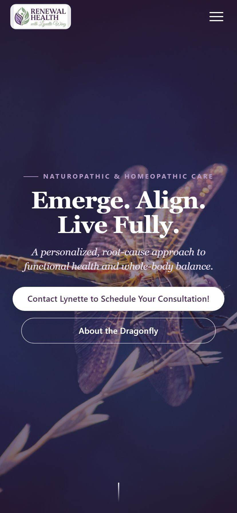
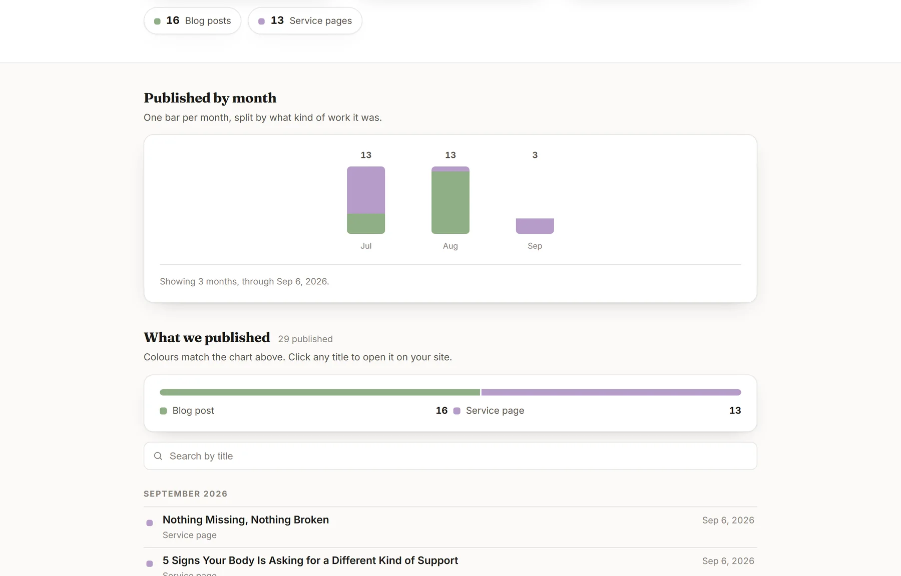

Renewal Health
A calm, editorial site that explains a root-cause practice, and the content engine that keeps it publishing.
Renewal Health is a functional health practice built around a root-cause approach, the kind of work that is easy to feel and hard to explain on a website. The site was the starting point, not the job. The job is the ongoing presence: a place that explains the practice clearly, a search foundation underneath it, and a content engine that keeps adding to it every week without the practitioner having to think about it.

What we designed
The whole experience is built around the dragonfly brand mark and a soft, editorial palette. A full-screen hero opens the site with “Emerge. Align. Live Fully.” over a quiet, moody image, and a short branded intro animation sets the tone before the page settles. Serif headlines and generous white space make it read like a wellness magazine, not a clinic form.
Every section explains functional health in plain language. Instead of leaning on medical jargon, the copy meets people where they are, describes the root-cause philosophy simply, and builds trust page by page toward the consultation.
What we built
A full multi-page site: home, services, programs and packages, an about page that tells the practitioner's story, a free guide and the book, and a clear contact path. It is mobile-first, because most people find a health practice on their phone, and it is structured so a first-time visitor always knows the next step.
Under the hood it carries the same on-page SEO foundation we build into every website, so the practice can be found by the people searching for exactly this kind of care.

The engine behind it
A site nobody adds to stops earning its keep, so the publishing does not stop at launch. Blog posts and service pages go out on a schedule, each one aimed at what somebody actually types when they are looking for this kind of care, and each one lands on the practice's dashboard the moment it goes live with a link to open it on their own site. It is the same local SEO loop we run for every client, just tuned for a health practice rather than a trade.
A calm, editorial site that explains a root-cause practice, and the content engine that keeps it publishing.
What we designed
The whole experience is built around the dragonfly brand mark and a soft, editorial palette.
What we built
A full multi-page site: home, services, programs and packages, an about page that tells the practitioner's story, a free guide and the book, and a clear contact path.
The engine behind it
A site nobody adds to stops earning its keep, so the publishing does not stop at launch.
The result
A website that looks and feels like the practice: calm, credible, and clear.
Everything published, counted by month.
Renewal Health opens this themselves. Every post and page we publish arrives here, charted by month, with a link to open it live on their own site.

Renewal Health, published by month. 16 blog posts and 13 service pages, 29 published in all: 13 in July, 13 in August, and 3 in September as of Sep 6, 2026. Each bar is split by which kind of work it was.
- 29 published in all
- 16 blog posts
- 13 service pages
- 13 in July, 13 in August, and 3 in September as of Sep 6, 2026
The result
A website that looks and feels like the practice: calm, credible, and clear. It gives Renewal Health a real online home that does the explaining, so conversations start with someone who already understands the approach and is ready to book.
Want a build like this one?
Tell us what your business does and we will come back within one business day.
Request a free consultation